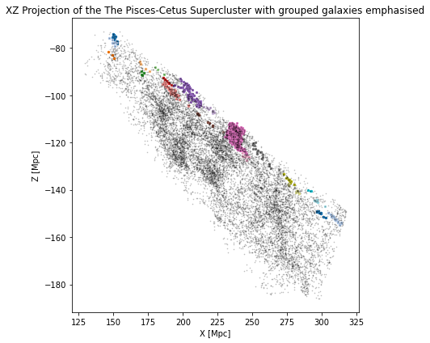
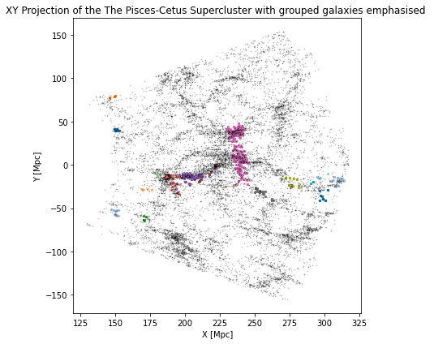

We learn by doing the puzzling work of putting pieces together.
Tracing the Cosmic Web: Unveiling the Universe's Hidden Structure
How simulations, Python pipelines, and Friends of Friends reveal filaments that hide the universe's missing baryons.
First slide label
Some representative placeholder content for the first slide.

Second slide label
Some representative placeholder content for the second slide.

Third slide label
Some representative placeholder content for the third slide.
Current cosmological models put the universe at roughly 85% dark energy, 10% dark matter, and 5% baryonic matter — the ordinary atoms that make up you, me, stars, and planets — yet ordinary atoms seem to disappear into thin, hidden strands that follow the universe's large-scale shape, as if its geometry is guiding where baryons hide. This article investigates the mystery of the missing baryons and shows how observations, simulations, and reproducible Python pipelines, including clustering methods like Friends-of-Friends, reconstruct the cosmic web's faint filaments to reveal where ordinary matter lurks, blending technical walkthroughs with personal reflection on why mapping the unseen matters.
TLDR
The missing baryons live in diffuse filamentary gas within the cosmic web; they are hard to detect directly but traceable through structure and simulations.
I demonstrate a reproducible pipeline using Python, mock catalogs, and Friends-of-Friends clustering to identify filaments from noisy data.
Key results: side-by-side observation vs simulation maps, filament reconstructions, and diagnostics showing sensitivity to parameters.
Read the article for code snippets, implementation notes, validation tests, and reflective takeaways that connect data, design, and curiosity.
🧠 Background & Problem Framing
🌌 How Structure Emerged
The universe began 13.8 billion years ago as a hot, nearly uniform plasma. Tiny fluctuations in density—visible today in the cosmic microwave background (CMB)—were seeded by dark matter. Over time, gravity amplified these fluctuations, forming the large-scale structure known as the cosmic web.
🕸️ What Is the Cosmic Web?
A vast network of galaxies, gas, and dark matter arranged in filaments, sheets, and voids
Dense regions like clusters and superclusters connected by elongated bridges of matter
Enormous voids with extremely low density
The largest gravitationally bound structure in the observable universe
💨 The Missing Baryon Problem
Only 5% of the universe is baryonic matter (ΛCDM model)
Simulations suggest 30–50% of it is hidden in a diffuse, warm-hot phase called the WHIM (Warm-Hot Intergalactic Medium)
This gas is difficult to detect due to low emission, foreground contamination, and absorption by the Milky Way
🔥 The Four Phases of the Intergalactic Medium (IGM)
Diffuse gas: low density, low temperature
Condensed gas: stars and cool galactic gas
Warm-Hot (WHIM): 105–107 K
Hot gas: found in galaxy clusters
As cosmic structure formed, shock heating transformed diffuse gas into WHIM—emitting in EUV and soft X-rays, but still elusive.
🔍 Detecting the WHIM
Soft X-ray background and autocorrelation functions
Absorption lines from ionized oxygen (O VII, O VI)
Emission lines from highly ionized species (O VIII)
Sunyaev-Zeldovich effect with galaxies
Morphology of AGN jets bent by ram pressure from the IGM
🌀 AGN Jets as Cosmic Probes
Bent jets are more common in dense environments
Jet bending correlates with IGM density and velocity
Galaxy group membership increases likelihood of bent jets
This makes AGN morphology a proxy for WHIM detection—and clustering algorithms like Friends-of-Friends a powerful tool for tracing filamentary environments.
🧪 Methods
🔦 Detecting the Invisible
Intergalactic gas is incredibly diffuse — up to 20 times less dense than the average baryonic matter in the universe. It emits no light of its own, making it invisible to direct observation. To detect it, we rely on how it affects light from distant galaxies and quasars.
Redshift surveys like 2dFGRS combine redshift and angular position data to reconstruct the 3D distribution of galaxies — revealing filaments, voids, and clusters.
☁️ How the IGM Leaves a Mark
Absorption: photons are absorbed by hydrogen atoms
Scattering: photons are deflected, reducing brightness
Extinction: the combined effect of absorption and scattering
These effects imprint redshifted absorption lines on spectra, allowing us to resolve intergalactic clouds — the filaments of the cosmic web.
🧮 Preparation of Data
📡 Coordinate Conversion
RA and Dec values from Vizier are converted from hms/dms to degrees using Astropy
RA values >12h are adjusted by subtracting 24h to maintain continuity across the celestial meridian
🚀 Velocity Corrections
Solar Motion Correction: adjusts for the Sun's motion within the Local Group.
Galaxies with corrected velocities <30 km/s are reassigned to 300 km/s to avoid singularities.
Denoted as vs.
Virgocentric Flow Correction: accounts for the Local Group's infall toward the Virgo Cluster.
Assumes an infall velocity of 300 km/s. Denoted as vv.
🧪 Velocity Filtering
Only galaxies with corrected recessional velocities <12,000 km/s are included
Final corrected velocity:
vcorrected(z) = v(z) - vv - vs
🗺️ Visual Inspection & Boundary Extraction
After corrections, the dataset is plotted to inspect galaxy distributions and identify clusters. This helps define boundaries for clustering algorithms.
RA range: 23h to 1h (Figure 6)
Redshift range: 12,000 km/s to 24,000 km/s
Cartesian coordinates:
x: 175-300 Mpc
y: -50 to 100 Mpc (Figure 7 shows -50 to 50 Mpc)
z: -140 to -90 Mpc (Figures 7 and 8)
🧠 Data Analysis: Friends-of-Friends Algorithm
The Friends-of-Friends (FoF) algorithm identifies gravitationally bound structures using galaxy positions and redshifts.
Galaxy Selection: galaxies are grouped by redshift slices:
zn = zn−1 + Δz
Categorization: galaxies are classified as:
Groups: ≥3 bound members
Isolated groups: 1–2 loosely associated galaxies
Group Formation: groups are merged if binding conditions are met
🔗 Binding Conditions
Distance: separation Dij must be below threshold DL
Velocity: relative velocity Vij must be below threshold VL
Groups are built iteratively by comparing each galaxy to others and linking those that satisfy both conditions. This helps identify dense regions and filaments. The implementation is based on the extended FoF algorithm by Botzler et al. (2002).
📊 Results
🧭 Mapping the Supercluster Region
After applying all corrections and filters, the dataset was plotted to visualize galaxy distributions. This revealed a dense supercluster region with the following constraints:
RA range: 23h to 1h
Redshift range: 12,000 km/s to 24,000 km/s
Cartesian bounds:
x: 175-300 Mpc
y: -50 to 100 Mpc
z: -140 to -90 Mpc
Figures 6, 7, and 8 show clear filamentary structures and voids, confirming the presence of large-scale clustering.
🧠 FoF Algorithm Output
Total galaxies classified: 2,104
132
91 groups contain more than 3 galaxies
41 groups are lone or isolated (1–2 members)
Most common group size: 3 galaxies
Largest group: 572 galaxies (only one such group)
Group size distributions are summarized in Table 2 and Table 3. The clustering reveals a mix of dense cores and peripheral associations.
🧱 Structural Features
Figures 11 and 13 reveal three distinct structural sections:
A vertical arrangement of groups dominated by the largest cluster
This structure acts as a divider between two separate group clusters
Some non-isolated groups are spatially distant from others, suggesting filament fragmentation or peripheral clustering
🌌 Supercluster Tracing
Figures 7-9 show the supercluster structure without group overlays — the darkest regions resemble the supercluster core
Figures 14-16 show how identified groups trace the supercluster's shape
This supports the hypothesis that galaxies are embedded within filaments
While some grouped galaxies lie outside the main structure, the overall distribution broadly follows the supercluster’s geometry — though not uniformly populated.
🔭 Projection Limitations
The XZ projection (Figures 8 and 14) lacks sufficient resolution for firm conclusions. However, other projections allow extrapolation of filamentary alignment and density gradients.
🧩 Conclusion
In this study, we used data from the 2dF Galaxy Redshift Survey together with an iterative Friends-of-Friends (FoF) clustering method to map large-scale cosmic structures. We corrected raw right ascension, declination, and redshift for solar motion and the Virgocentric flow, then filtered by velocity. Finally, we used Astropy to convert spherical coordinates into Cartesian coordinates, giving us precise 3D positions for every galaxy.
The FoF algorithm identified 132 galaxy groups: 91 contain more than three galaxies, while 41 are isolated systems. When we plotted those 91 richer groups in Cartesian space, they traced out the filamentary outline of a supercluster. This confirms that a supercluster is really a collection of smaller galaxy groups, in line with hierarchical-formation theory.
Our results also set the stage for tackling the Missing Baryon problem, which notes that a large fraction — about 40%–50% of normal matter — is unaccounted for. Cen and Ostriker (2006, 1999) predict these “missing” baryons live in the warm-hot intergalactic medium (WHIM), which is hard to observe directly.
Next, we’ll use FoF to pinpoint galaxy filaments, cross-match active galactic nuclei (AGN) in those filaments with radio catalogues, and study how the intergalactic medium shapes AGN morphology. From those changes, we can estimate the WHIM’s density and temperature. Finally, we’ll apply this method to different filaments across the cosmic web to find and study the missing baryons in the WHIM.
.png)